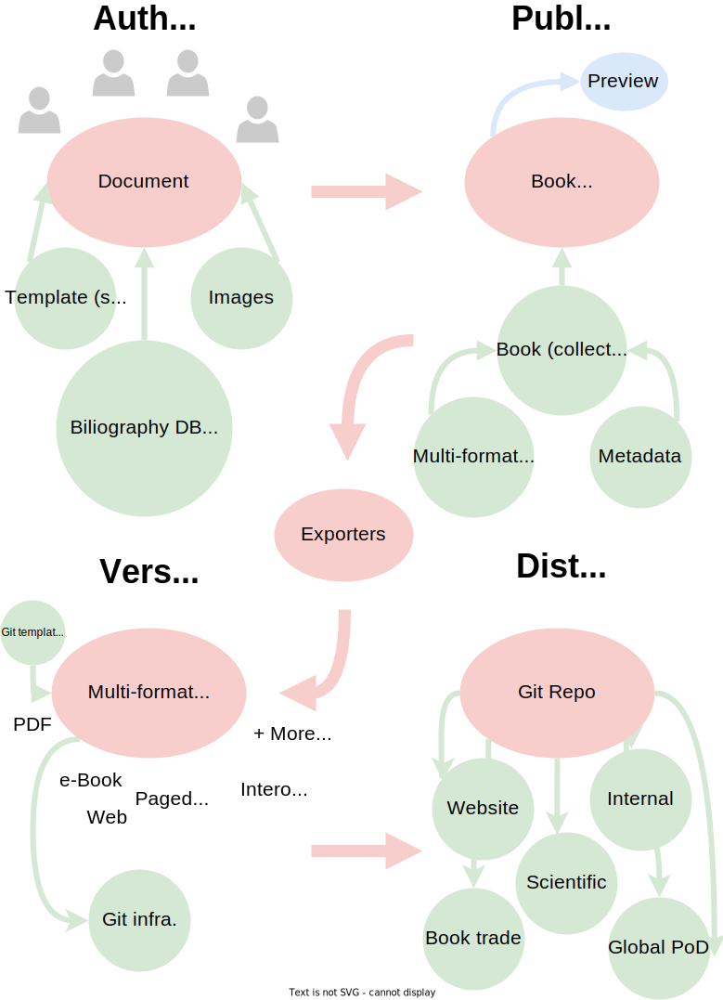
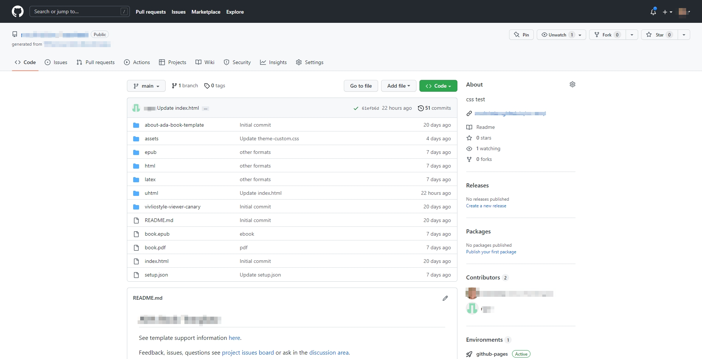
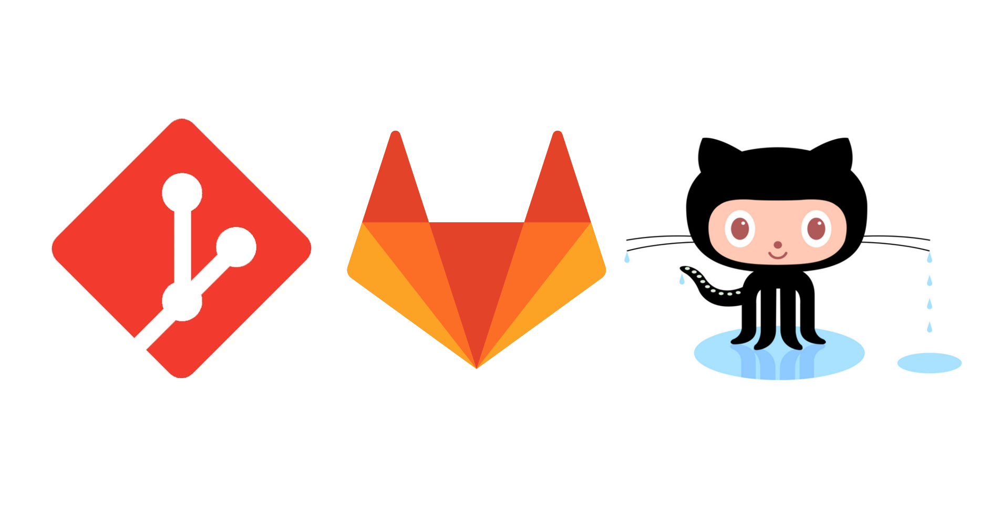
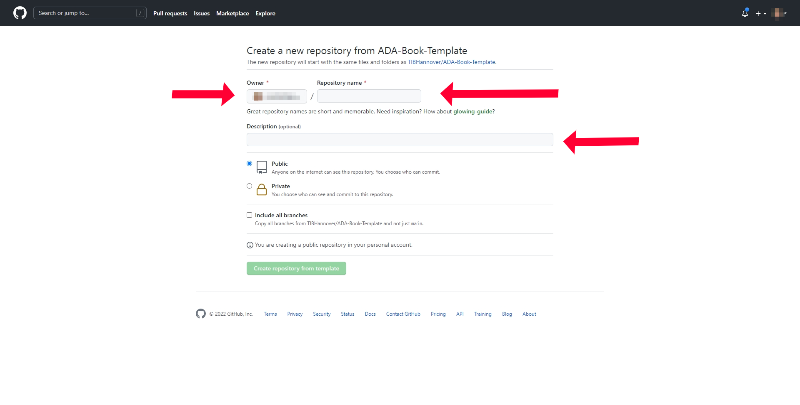
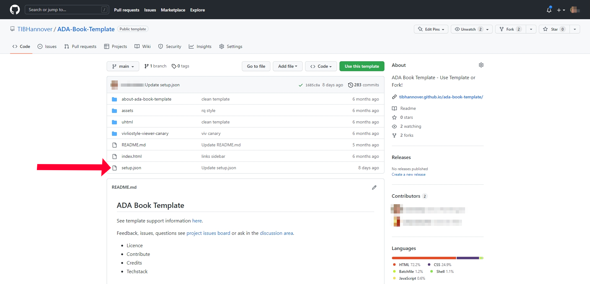
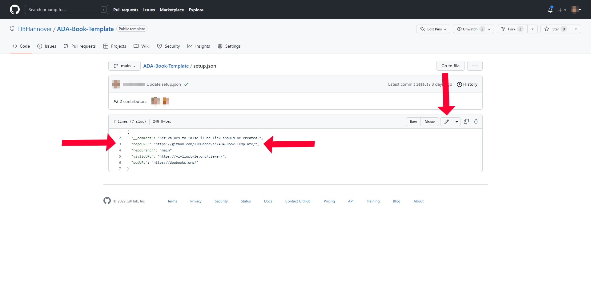
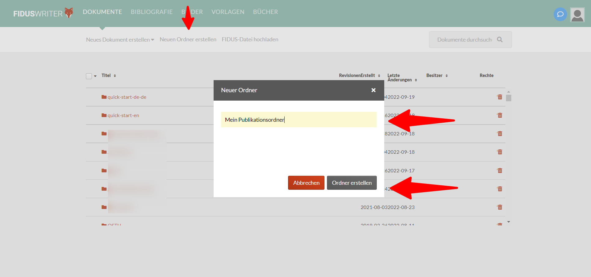
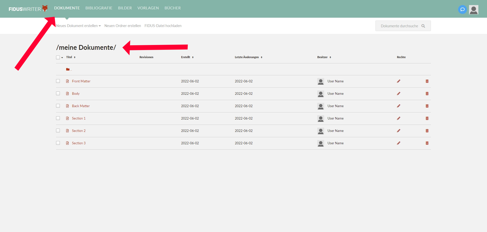
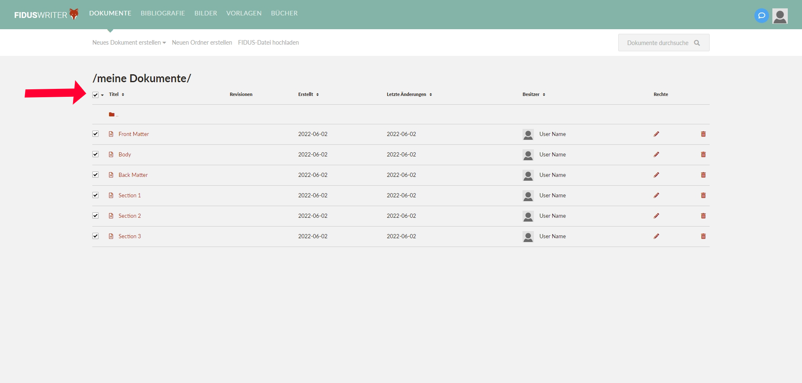
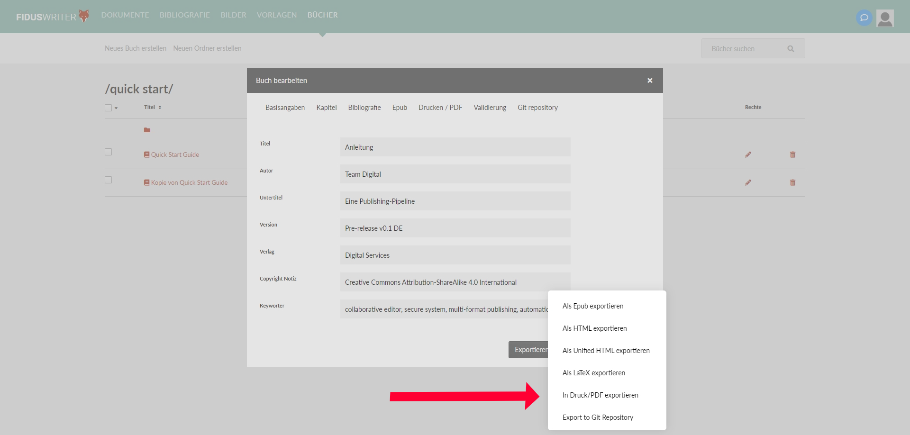

In der Schnellstartanleitung erfahren Sie, wie Sie die "Publishing-Pipeline" für die Erstellung von Publikationen in mehreren Formaten nutzen können: Berichte, Handbücher, Bücher, Abhandlungen usw.
Die "Publishing Pipeline" verbindet das Textverarbeitungsprogramm mit dem Publishing. Für die Publikationsproduktion bedeutet dies, dass Sie von einem Online-Mehrbenutzer-Editor aus automatisch Ausgaben in mehreren Formaten erstellen und setzen können - PDF, Web, eBook, Print-on-Demand und mehr -, die in Dateien gespeichert oder online verfügbar sind. Außerdem können Sie jederzeit Aktualisierungen für alle Ausgabeformate aus einer einzigen Quelle vornehmen.
Hochwertige Layout-Designs werden durch die Kombination von vorgefertigten Layout-Designstilen mit automatisiertem Maschinensatz ermöglicht. Dies bedeutet, dass alle zeitaufwändigen Layout-Design-Arbeiten aus der Produktionszeit herausgenommen und im Voraus erledigt werden, was einen schnellen Publishing-Workflow ermöglicht.
Die Schnellstartanleitung richtet sich an Autoren und Publikationsmanager. Technische Administratoren und Entwickler sowie Satzgestalter sollten sich den 'Admin Guide' ansehen.
Wir werden mit einem kollaborativen Online-Textverarbeitungsprogramm arbeiten und in verschiedenen Formaten veröffentlichen - PDF, Web, E-Book, Mobile, Print-on-Demand usw. - und dabei Open-Source-Software und -Systeme des Typs "digital sovereign" verwenden, um den Datenschutz und die Sicherheit zu gewährleisten, wie z. B. Selbst-Hosting, GDPR-Konformität, Verschlüsselung usw.
Was Sie brauchen, bevor Sie beginnen
Im Abschnitt "Was Sie für die ersten Schritte benötigen" dieses Leitfadens finden Sie Anweisungen zum Erstellen aller erforderlichen Konten.
Für Beitragszahler
Die Teilnehmer müssen Folgendes mitbringen.
Eine E-Mail-Adresse für den Empfang von Konto-E-Mails.
Ein Benutzerkonto für das Online-Textverarbeitungsprogramm "Fidus Writer".
Für Publikationsmanager
Die Verantwortlichen für Veröffentlichungen benötigen Folgendes.
Eine E-Mail-Adresse für den Empfang von Konto-E-Mails.
Ein Benutzerkonto für das Online-Textverarbeitungsprogramm "Fidus Writer".
GitLab- oder/und GitHub-Konten, je nachdem, welche unterstützte Git-Plattform Sie verwenden.
Verbinden Sie "Fidus Writer" mit der Git-Plattform Ihrer Wahl.
Die Schritte zur Erstellung einer Veröffentlichung
Erstellen eines Git-Repositorys und einer Website
Ein Buch erstellen (Zusammenstellung von Dokumenten)
Das Team einladen
Multiformat-Veröffentlichung
Was Sie hier lernen werden
Einrichtung eines Kontos für Fidus Writer, GitLab, einschließlich GitLab.com und GitLab CE, und GitHub.
Wie Sie Ihr öffentliches Git-Repository für die Speicherung Ihrer Publikationsdaten vorbereiten, mit einer Option zur Aktivierung einer Website.
Erstellung von GitLab Pages und GitHub Pages-Websites.
So richten Sie die kollaborative Online-Textverarbeitung für Ihre Publikation ein.
Laden Sie Ihr Team ein, online gemeinsam an Texten zu arbeiten.
Wie man veröffentlicht.
Pipeline-Merkmale
Gemeinsamer Arbeitsbereich: Laden Sie Designer, Redakteure, Korrekturleser oder Lektoren ein, an einer Publikation zu arbeiten.
Ausgabe von Publikationen in mehreren Formaten: Website, PDF, paginiertes Web, eBook, Print-on-Demand usw.
Automatischer Satz und Layout-Designstile, so dass kein zeitaufwändiger Schriftsatz erforderlich ist.
Single-Source-Publishing: Bearbeitung und Verteilung an alle Formate.
Zitier-Manager.
Open-Source-Software und "Pipeline-Architektur" für die Systemintegration.
Semantische Strukturierung und Anreicherung: Linked Open Data (Verwendung von Terminologiediensten und TDM), PID auf Publikationsebene, interne Struktur der Publikation und für digitale Objekte.
Systemkonfigurationen und Einstellungen
Informationen zu den Einstellungen von Fidus Writer, Dokumenten und Büchern finden Sie im Abschnitt "Systemkonfigurationen und -einstellungen" des Handbuchs.
Struktur der Veröffentlichungsdaten

AbbildungDatenmodell des Systems
Digitale Souveränität
Der Begriff "digitale Souveränität" wird hier verwendet, um die Schritte zu beschreiben, die unternommen werden, um die Privatsphäre persönlicher Daten und die Sicherheit von Inhalten zu gewährleisten. Datenschutz und Sicherheit sind von entscheidender Bedeutung, da Unternehmen und Staaten mit böswilligen Absichten oder durch versehentliche Datenverluste in die digitalen Aktivitäten eingreifen.
Um Ihre "digitale Souveränität" zu gewährleisten, kombinieren wir Datensicherheitsmaßnahmen, die Einhaltung von Datenschutzgesetzen wie der Europäischen Datenschutz-Grundverordnung (GDPR) und die Bereitschaft zur Einhaltung von Datenschutzgesetzen verschiedener Jurisdiktionen wie dem California Consumer Privacy Act (CCPA) sowie die Transparenz von Code und Datenspeicherung.
Das System kann selbst gehostet werden, ist quelloffen, erfüllt die Anforderungen der DSGVO, verwendet die Zwei-Faktor-Authentifizierung für Verwaltungsbereiche und die OAuth-Authentifizierung für die Integration der Authentifizierungs- und Autorisierungsinfrastruktur (AAI).
Was Sie für den Einstieg benötigen
Im Folgenden finden Sie Anweisungen zu den Schritten, die Sie ausführen müssen, bevor Sie mit der Arbeit an einem "Publishing Pipeline"-Projekt beginnen.
Alle Benutzer benötigen eine E-Mail-Adresse, die E-Mails mit URL-Links empfangen kann, die zur Kontoverifizierung im Internet verwendet werden können.
Der folgende Inhalt ist nach Benutzertypen geordnet:
Mitwirkender an der Veröffentlichung
Publikationsmanager
Erstellung eines Kontos: Die folgenden Anweisungen beziehen sich auf die Standardmethoden zur Erstellung von Konten. Wenn die aufgelisteten Plattformen "Single Sign On"-Funktionen verwenden, kann die Authentifizierung auch über die Anmeldedaten des Unternehmens oder über Plattformkonten wie GitLab, OAuth-Dienste oder über andere Authentifizierungs- und Autorisierungsinfrastrukturen (AAI) erfolgen.
Beitragende zur Veröffentlichung
Erstellung eines Kontos
Fidus Writer
Fidus Writer verfügt über drei Verfahren zur Erstellung von Konten, und je nach der von Ihnen verwendeten Instanz haben Sie unterschiedliche Optionen:
Nur einladen
Anmelden
Einmalige Anmeldung mit Authentifizierung
Nur einladen: Wenn es auf der Website keine Schaltfläche "Anmelden" gibt, erfolgt die Kontoerstellung nur über eine Einladung. Bitte wenden Sie sich an die Website-Manager und beantragen Sie ein Konto. Wenn Sie für ein Konto zugelassen werden, erhalten Sie eine E-Mail mit Anweisungen für den Abschluss der Kontoerstellung.
Anmelden: Befolgen Sie die Anweisungen zur Kontoerstellung auf der Website. Sobald Sie alle Angaben gemacht haben, erhalten Sie eine E-Mail, um den Anmeldevorgang abzuschließen.
Wichtiger Hinweis: Sie müssen Ihr Konto verifizieren, indem Sie auf die in Ihrem E-Mail-Posteingang erhaltene E-Mail klicken und den Datenschutzbestimmungen zustimmen, um die Kontoerstellung abzuschließen. Wenn Sie dies nicht tun, kann Ihr Konto nicht erstellt werden.
Single Sign On: Fidus Writer kann mit Authentifizierungsdaten von anderen Plattformen verwendet werden, die das OAuth-Protokoll verwenden. Wenn Sie über ein Konto mit einem Authentifizierungsdienst verfügen, der in der von Ihnen verwendeten Fidus Writer-Instanz aufgeführt ist, können Sie sich mit diesem Konto anmelden, unabhängig davon, ob es sich um Ihr Arbeitsplatzkonto oder ein anderes Plattformkonto handelt, z. B. ein GitLab-Konto.
Sie können sehen, ob andere Plattform-Logins verwendet werden können, da sie auf der Fidus Writer-Homepage aufgeführt sind. Nachfolgend sehen Sie eine Beispielseite, die GitHub und GitLab verwendet.
Verfügbare soziale Konten
Veröffentlichungs-Manager
Erstellung eines Kontos
Fidus Writer
Siehe Anweisungen oben.
Git
Je nachdem, welche Git-Plattform Sie in der "Veröffentlichungsplattform" verwenden, benötigen Sie ein Konto auf jeder Plattform. Möglicherweise verwenden Sie mehr als eine Git-Plattform. In diesem Fall benötigen Sie ein Konto für jede einzelne Plattform.
Derzeit sind dies: GitLab CE, GitLab.com, und GitHub.com werden unterstützt (2022).
GitLab-Konto
Das gleiche Verfahren wird für GitLab Community Edition (GitLab CE) oder für GitLab.com verwendet.
Das Git-Repository (Repo) ist der Speicherort der von Ihnen erstellten Publikation, die sich im Internet befindet. Aus dem Repository kann auch eine Präsentations-Website erstellt werden, auf der ausgewählte Inhalte veröffentlicht werden. Wenn Ihr Repository aktualisiert wird, wird auch Ihre Website aktualisiert.

FotoBeispiel für ein Git-Repository (repo)FotoBeispiel für eine mit GitHub/Lab Pages erstellte Publikationswebsite, die eine Präsentation des obigen Repositorys ist. Der Pfeil zeigt die Links zu den anderen verfügbaren Formaten
Über Git
Das Repository verwendet die Git-Technologie, die die Versionierung von Dateien ermöglicht und zum Speichern Ihrer Veröffentlichung verwendet wird.
Das System bietet die Möglichkeit, GitLab CE, GitLab.com oder GitHub zu verwenden. GitLab kann als GitLab.com oder als selbst gehostete Instanz für öffentliche und private Veröffentlichungen oder für die Bereitstellung von Veröffentlichungen für die spätere Übertragung auf ein anderes gehostetes System, entweder GitHub oder GitLab.com, verwendet werden. Wir verwenden GitLab Community Edition (GitLab CE), eine Open-Source-Software, für das Selbst-Hosting. GitHub ist keine Open-Source-Software, eignet sich aber für die Verbreitung und Sichtbarkeit von Publikationen.

FotoGit logos - Git; GitLab, and; GitHub
Schritt-für-Schritt-Anleitung
Diese Anleitung bezieht sich auf die Verwendung von GitHub. Die Grundsätze sind die gleichen für GitLab.
Mit diesen Schritten können Sie ein Repository für Ihre Publikation mit der Option zur Erstellung einer Website über Git (Hub/Lab) Pages erstellen.
Ein Repository erstellen
Um Ihr Repository zu erstellen, verwenden wir ein Vorlagen-Repository.
Sie erstellen ein Repository, das vom Template Repository vorausgefüllt wird, damit Sie später den Inhalt Ihrer Publikation hinzufügen können. Das Vorlagen-Repository enthält Komponenten zur Erstellung der Website und zur Bereitstellung von Links zu anderen Publikationsformaten, die auf der Website als Links angezeigt werden.
Es gibt eine Reihe von Vorlagen, die Sie verwenden können, und Ihr Publikationsmanager kann Ihnen sagen, welche Sie verwenden sollen. Als Beispiel finden Sie hier eine Vorlage auf GitHub aus der ADA-Pipeline, die von der Deutschen Zentralbibliothek für Technikwissenschaften (TIB) gepflegt wird.
Navigieren Sie zu dem Link für die Vorlage und klicken Sie auf die grüne Schaltfläche "Diese Vorlage verwenden".
FotoBeispiel für ein Vorlagen-Repository. Verwenden Sie das Vorlagen-Repositorium, um Ihr Publikations-Repositorium vorzufüllen
Wählen Sie dann den Ort, an dem Sie das neue Repository anlegen möchten, und seinen Namen. Klicken Sie anschließend auf "Repository aus dieser Vorlage erstellen".

FotoLegen Sie Eigentümer (Standort), Name und Beschreibung fest. Dann speichern
Wo speichern Sie Ihr Repository? In GitHub können Sie Repos mit Organisationen oder in Ihrem persönlichen Konto speichern, wählen Sie dies unter dem Feld "Eigentümer".
Wie benennen Sie Ihr Repository? Der Name des Repos ist sein Anzeigename und seine URL-Adresse. Es empfiehlt sich, einen Namen zu wählen, der mit anderen Veröffentlichungen übereinstimmt, z. B. ein Kurztitel oder sogar ein Akronym. Beachten Sie, dass im Namen nur Kleinbuchstaben verwendet werden sollten, da bei der URL Groß- und Kleinschreibung beachtet wird. Die Namen können jederzeit geändert werden, allerdings werden dadurch auch die zugehörigen URLs geändert.
Hinweis: Die Namen der Repos können jederzeit geändert werden, allerdings wird dadurch die URL der Website auf den neuen Namen geändert, und Sie müssen daran denken, die URL an anderen Stellen zu aktualisieren, an denen Sie die URL-Adresse verwendet haben.
Andere Einstellungen: Sie können dem Projektarchiv eine Beschreibung geben; die Voreinstellung ist, das Projektarchiv öffentlich zu machen, und dann klicken Sie auf die grüne Schaltfläche zum Speichern.
Herzlichen Glückwunsch, Sie haben nun Ihr Repository erstellt und einen Ort gefunden, an dem Sie Ihre Veröffentlichung speichern können.
Erstellen Sie eine GitHub/Lab Pages-Website
GitHub bietet einen Dienst namens GitHub Pages an. Damit werden kostenlose Websites unter der Domain github.io erstellt, oder Sie können Ihre eigene benutzerdefinierte Domain verwenden. Das Standard-URL-Adressmuster ist https://organisation-name.github.io/publication-name/. Der Inhalt Ihres Projektarchivs wird auf der Website unter der angegebenen URL verfügbar sein.
Hinweis: Websites können mit benutzerdefinierten Domainnamen versehen werden. Sie müssen die GitHub-Dokumentation konsultieren, um diese Funktion zu aktivieren.
Dies ist ein zweiteiliger Prozess.
Teil 1: Aktivieren Sie die Erstellung von GitHub/Lab Pages-Websites
FotoSchalten Sie Seiten ein. Besuchen Sie die Registerkarte "Einstellungen"; den linken Menüpunkt "Seiten"; setzen Sie ihn auf "Haupt" und "Stamm".
Navigieren Sie zu "Einstellungen" in den oberen horizontalen Registerkartenoptionen. Wählen Sie in den Einstellungen im linken Menü "Seiten". Nehmen Sie im Dialog auf der Hauptseite die folgenden Einstellungen vor: Wählen Sie den Zweig - Main; wählen Sie den Ordner - Root, und klicken Sie auf Speichern. Damit ist die Erstellung der Seite abgeschlossen und Sie erhalten eine URL für Ihre Website. Kopieren Sie die URL und verwenden Sie sie, um die Adresse in das Frontend des Repo einzufügen.
FotoSchalten Sie Seiten ein. Besuchen Sie die Registerkarte "Einstellungen"; den linken Menüpunkt "Seiten"; setzen Sie ihn auf "Haupt" und "Stamm".
Um den Namen der Website in das Frontend Ihres Repo einzufügen, gehen Sie zunächst zum Frontend des Repo, indem Sie auf der linken Seite der horizontalen Registerkarten Ihres Repo auf Code klicken. Klicken Sie auf der rechten Seite auf das Zahnrad neben About. Hier können Sie die URL einfügen und speichern.
FotoSie können den Namen der Publikation und die URL-Adresse in die Infobox eingeben, die dann im Frontend des Repos angezeigt wird.
Sie haben nun eine Website und die Adresse erscheint oben rechts.
FotoNach der Eingabe werden der Name und die URL-Adresse oben rechts angezeigt.
Ihre Website wird wie folgt aussehen. Derzeit enthält die Website Benchmark-Inhalte, um zu zeigen, dass die Layout-Funktionen korrekt funktionieren. Dieser Inhalt wird ersetzt, sobald Sie Ihre Publikation veröffentlicht haben.
FotoZu Beginn wird Ihre Website mit Benchmark-Testinhalten aus der Vorlage versehen. Später, bei der Ausgabe aus Fidus, wird dies überschrieben
Teil 2: Anzeigen von Multiformat-Inhalten auf GitHub/Lab-Seiten
Um die paginierte Webversion Ihrer Publikation zu aktivieren, muss die Repo-Adresse zur setup.json-Datei auf der obersten Ebene Ihres Repos hinzugefügt werden.

FotoSuchen Sie die Datei setup.json in der obersten Ebene Ihres Repos. Klicken Sie darauf, um sie anzuzeigen und zu bearbeiten
Bearbeiten Sie die Datei setup.json und fügen Sie den Organisationsnamen und den Repo-Namen in Zeile 3 ein und speichern Sie unten auf der Seite, "repoURL": "https://github.com/organisation-name/publication-name/".

FotoZum Bearbeiten klicken Sie auf das Bleistiftsymbol oben rechts. Bearbeiten Sie dann Zeile 3 und ändern Sie die Adresse Ihres Repos
Alle Schritte Ihrer Git-Einrichtung sind nun abgeschlossen.
Schritt 1 ist abgeschlossen: Wie geht es weiter?
Jetzt, wo Sie Ihr Repo und Ihre Website eingerichtet haben, richten Sie als Nächstes ein Buchprojekt in Fidus Writer ein und verbinden es mit Ihrem Git-Repo, damit Sie Buchdateien aus Fidus Writer in Git ausgeben können.
Git ist eine Open-Source-Software, auf der sowohl GitHub als auch GitLab aufgebaut sind.
Schritt 2: Erstellen eines Buchprojekts in Fidus Writer
Das Buchprojekt in Fidus Writer dient als leerer Container für Ihre Publikation. Später können Sie alle Dateinamen und Buchinformationen ändern, um Titel und Inhalt Ihres Buches wiederzugeben. Sie können auch jederzeit Dokumente hinzufügen und entfernen.
Was hier behandelt wird
Erstellen Sie einen "persönlichen" Ordner (den nur Sie sehen - er ist nicht freigegeben) für Ihre Buchdokumente.
Erstellen Sie drei Platzhalterdokumente für Ihre Buchteile: Vorderseite; Abschnitt 1, und; Rückseite.
Fügen Sie Ihre Dokumente zu einem Fidus Writer Book hinzu - eine Zusammenstellung von Buchdokumenten.
Verbinden Sie Ihr Buch mit einem Git Repo.
In einem späteren Schritt wird die gemeinsame Nutzung der Publikation mit Ihrem Team behandelt.
Vollständige Details zur Konfiguration der Publikation finden Sie im Pipeline-Handbuch.
1. Erstellen Sie einen "persönlichen" Ordner
Hier erstellen Sie einen Ordner und legen anschließend Ihre drei Dokumente in diesem Ordner an. Zu Beginn müssen Sie sich im Dokumentenbereich der Website befinden.
Klicken Sie oben auf der Seite im Sekundärmenü auf "Neuen Ordner erstellen" und geben Sie dem Ordner einen Namen.

FotoErstellung von Dokumentenordnern - Ordner hinzufügen, benennen und speichern
Jetzt haben Sie einen leeren Ordner. Wenn in dem Ordner keine Dokumente erstellt werden und er leer bleibt, wird der Ordner nicht gespeichert, wenn Sie weggehen.
2. Platzhalterdokumente erstellen
Wir werden nun drei Dokumente in dem soeben erstellten Ordner erstellen. Dies sind die Beispiele für die Platzhalterdokumente, die Sie erstellen werden:
Titelblatt: Hier fügen Sie das Impressum, Informationen zu den Mitwirkenden, Danksagungen usw. ein.
Abschnitt 1: Ein übergeordneter Teil eines Buches als Abschnitt oder Kapitel
Hinteres Vorsatzblatt: Dieser Teil kann Anhänge, Glossare, Abkürzungen usw. enthalten.
So erstellen Sie Dokumente
Wählen Sie im Untermenü unter Dokumente die Option "Neues Dokument erstellen" und wählen Sie die Dokumentvorlage "Buchstandard". Wenn Sie an einem speziellen Buch oder einer Publikationsreihe arbeiten, können Sie eine andere Dokumentvorlage verwenden. Wenden Sie sich an den Publikationsmanager, um sich beraten zu lassen.
Hier werden Sie drei Dokumente als Platzhalter hinzufügen. Diese werden hinzugefügt, damit Sie Ihre Buchgrundlagen konfigurieren können, Namen und Dokumente können später geändert oder gelöscht werden. Legen Sie drei Dokumente mit den folgenden Namen an: Vorderseite; Abschnitt 1, und; Rückseite.
FotoDokumente erstellen und eine Dokumentvorlage verwenden
1. Neues Dokument erstellen, 2. die Dokumentvorlage auswählen, 3. den Titel des Dokuments hinzufügen, 4. das Dokument über das Menü Datei schließen.
FotoErstellen Sie ein Dokument und fügen Sie einen Titel hinzu, dann schließen Sie es über das Menü DateiFotoHinzufügen von Dokumenten, die in Ihrem Buch verwendet werden sollen
Sie haben nun die grundlegenden Buchabschnitte, und wir können mit der Erstellung des Fidus Writer Buchcontainers fortfahren.
3. Ein Fidus Writer Buch erstellen
Ein Fidus Writer Buch fasst eine Reihe von Fidus Writer Dokumenten zusammen. Hier werden wir ein Buch erstellen und Ihre soeben erstellten Dokumente hinzufügen, sowie einige grundlegende Konfigurationen des Buches vornehmen.
Navigieren Sie zum Abschnitt Buch auf der Website.
FotoErstellen Sie ein Fidus Writer-Buch. Navigieren Sie zum Abschnitt "Buch" und verwenden Sie "Buch erstellen" auf der linken Seite
Klicken Sie auf "Neues Buch erstellen". Es wird ein Buchdialogfeld mit einer Reihe von Registerkarten angezeigt: Grundlegende Informationen, Abschnitte, Bibliographie, Epub, Druck/PDF, Validierung und Git Repo.
Zu Beginn werden Sie nur einige wenige Einstellungen vornehmen. Sie können später zurückkehren, um die gesamte Einrichtung des Buches abzuschließen. Hier werden wir den Titel ausfüllen und Ihre Dokumente hinzufügen.
1. Geben Sie den Buchtitel auf der Registerkarte Grundlegende Informationen ein.
FotoBuchinformationen hinzufügen, Buchtitel hinzufügen, um damit zu beginnen
2. Dokumente hinzufügen. Um Ihre Dokumente hinzuzufügen, wechseln Sie zur Registerkarte "Abschnitte". Hier sehen Sie auf der linken Seite Ihre Dokumente aufgelistet, ganz oben Ihren neu erstellten "Ordner". Klicken Sie auf den Ordner, um seinen Inhalt anzuzeigen. Sie können Ihre Dokumente dem Buch hinzufügen, indem Sie sie auswählen und auf den Pfeil in der Mitte klicken, um sie der rechten Spalte hinzuzufügen. Speichern Sie nun Ihr Buch. Das Dialogfeld wird nun geschlossen, und Ihr Buch wird in der Rubrik "Bücher" der Website aufgeführt.
FotoWählen Sie die Registerkarte "Kapitel" und fügen Sie Dokumente aus Ihrem Ordner in die rechte Spalte ein, um sie in Ihr Buch aufzunehmen. Dann speichern
Sie können später zurückkehren, um alle Bucheinstellungen zu vervollständigen.
Ihr Buch ist nun bereit, mit Git verbunden zu werden, um es auszugeben.
4. Verbinden Sie Ihr Fidus Buch mit einem Git Repo
Dieser Teil des Prozesses muss nur von Publikationsmanagern oder Benutzern durchgeführt werden, die in Git ausgeben werden. Wenn das Git-Repository öffentlich ist, kann jeder Benutzer die gespeicherten Inhalte ohne Anmeldedaten einsehen. Repos können privat gemacht werden oder der Zugriff kann nur bestimmten Benutzern oder Benutzergruppen gewährt werden.
Sie müssen Ihr Git-Repository im Voraus erstellt haben, wie in Schritt 1 des Leitfadens beschrieben, denn in diesem Repository werden Sie auch Ihre Publikationsdateien ausgeben.
Zuerst verbinden wir Fidus Writer mit der von Ihnen verwendeten Git-Instanz, indem wir Git autorisieren, sich mit Fidus Writer zu verbinden, indem wir Ihre Benutzerkonten auf beiden Systemen verwenden.
Plattformen verbinden
1. Stellen Sie sicher, dass Sie bei Git und Fidus Writer angemeldet sind.
2. Navigieren Sie auf der Fidus Writer-Startseite oben rechts zu Ihrem Benutzerprofil und klicken Sie auf Ihren Benutzernamen, um zu Ihrer Benutzerprofilseite zu gelangen, wo Sie sich im Bereich "Soziale Konten" mit Ihrer Git-Instanz verbinden können.
3. Klicken Sie auf Verbinden neben der Git-Instanz, mit der Sie sich verbinden möchten.
FotoMit Git verbinden
4. Sie werden nun auf die Git-Website weitergeleitet und müssen sich anmelden, falls Sie dies noch nicht getan haben.
5. Akzeptieren Sie dann die Autorisierung. Durch diesen Vorgang werden Ihre Benutzerkonten verbunden und die beiden Systeme können Ihre Publikationsdateien übertragen.
Der Verbindungsprozess ist nun abgeschlossen, und wir werden nun das Repo für Ihr Buch auswählen.
Repo auswählen
1. Navigieren Sie zu Ihrem Buch und klicken Sie darauf, um das Buchdialogfeld zu öffnen. Klicken Sie auf die Registerkarte Git-Repository auf der rechten Seite.
FotoWählen Sie das zu verwendende Repo und speichern Sie es. Neu laden, wenn das gewünschte Repo nicht verfügbar ist
2. Klicken Sie auf "Aktualisieren" auf der rechten Seite, um die Liste der Repos von Git zu erhalten. Die Repos werden nun im Dropdown-Menü verfügbar sein.
3. Wählen Sie Ihr Repository aus der Liste aus, markieren Sie unten die gewünschten Ausgabetypen und klicken Sie auf "Speichern". Die Optionen für das Exportformat sind: EPUB-Export, Ungepackter EPUB-Export, HTML-Export, Export Unified HTML, LaTeX-Export. Standardmäßig benötigen Sie nur EPUB und Unified HTML. PDF wird manuell hochgeladen - Anweisungen dazu finden Sie im Abschnitt Ausgabe Ihres Buches als Multiformat.
4. Sie können nun Ihr Buch nach Git exportieren. Klicken Sie auf der Registerkarte Git-Repository unten rechts auf die Schaltfläche Export und wählen Sie "Export to Git repository". Es erscheint ein Dialog, in dem Sie aufgefordert werden, eine Commit-Nachricht einzugeben, die eine Notiz für den Export der Revision darstellt.
FotoGit-Export-Einstellungen. Registerkarte "Git"; Repo auswählen; Ausgaben wählen und exportieren
Unten rechts erscheint ein Meldungsdialog. Wenn die Meldung "Your Book has been successfully saved to Git" erscheint, ist der Vorgang abgeschlossen.
FotoGit-Exportmeldung - siehe rechte untere Ecke
Sie können nun zu Git navigieren und sehen Ihre Dateien auf Git. Das ist das Ende dieses Prozesses.
FotoIhre Publikation wird in Git ausgegeben
Nächste Schritte
Sie können nun Ihr Team einladen, auf die Veröffentlichung auf Fidus Writer zuzugreifen.
Schritt 3: Laden Sie Ihr Team ein
Dieser Bereich ist für Publikationsmanager gedacht.
Sie können Mitwirkende zu Ihrem Publikationsprojekt einladen und ihnen Zugriff auf die Projektdokumente und das Buch geben.
Hinweis: Mitwirkende können Dokumente bearbeiten und eine Vorschau der Buchveröffentlichung als PDF, E-Book usw. anzeigen, ohne die Veröffentlichung in Git zu exportieren oder andere Konfigurationen eines Buches zu ändern, z. B. die Reihenfolge der Abschnitte (Kapitel) oder andere Buchinformationen und Einstellungen zu bearbeiten.
Wenn Ihr Team noch keine Konten hat, lesen Sie den Abschnitt "Was Sie für den Anfang brauchen", um sie als Benutzer zum System hinzuzufügen.
Der Zugang zu einer Publikation ist ein dreiteiliger Prozess für Autoren:
Zunächst muss der Benutzer akzeptieren, dass er ein Kontakt von Ihnen ist.
Zweitens gewähren Sie den Zugriff auf die Bearbeitung von Dokumenten, und
Drittens gewähren Sie einen Nur-Ansichts-Zugang zum Buch, damit die Benutzer Vorschauen herunterladen können.
Teammitglieder können auch für verschiedene Rollen freigeschaltet werden, z. B. als Rezensenten oder Redakteure:
Prüfer mit der Berechtigung, Dokumente zu kommentieren, und;
Redakteur mit der Berechtigung, nur Änderungen an Dokumenten zu verfolgen.
Die Einstellungen für diese Rollen werden am Ende des Abschnitts beschrieben.
1. Hinzufügen von Benutzern als Kontakte
Jeder Benutzer in Fidus Writer hat Kontakte. Zuerst muss ein Benutzer ein Kontakt sein, bevor er eingeladen werden kann und Zugang zu Ihren Dokumenten oder Büchern erhält.
Navigieren Sie auf der Startseite von Fidus Writer zu Ihrem Benutzersymbol oben rechts und wählen Sie aus dem Dropdown-Menü Kontakte.
FotoKontakte hinzufügen - oben rechts
Sie werden eine leere Seite sehen, wenn Sie noch keine Kontakte haben, oder eine Liste mit Kontakten.
FotoKontakt einladen - oben links. Liste der Kontakte
Klicken Sie auf Kontakt einladen oben links. Sie können hier Kontakte nach Benutzernamen oder E-Mail-Adresse hinzufügen. Jeder hinzugefügte Kontakt wird über Ihre Kontaktanfrage benachrichtigt und muss die Anfrage genehmigen.
Wenn die Person noch kein Fidus Writer-Konto hat, müssen Sie ihre E-Mail-Adresse verwenden, und dann wird sie eingeladen, ein Konto zu erstellen.
FotoDialogfeld "Benutzer einladen". E-Mail-Adresse oder Benutzernamen hinzufügen, um den Benutzer einzuladen
Der Benutzer erhält eine Benachrichtigung in Fidus Writer und als E-Mail über die Kontaktanfrage und muss dann die Anfrage annehmen. Wenn der Benutzer bei Fidus Writer angemeldet ist, erscheint die Benachrichtigung als Pop-up-Anfrage, damit er sich zu den Kontakten durchklicken kann. Außerdem können sie jederzeit ihre Kontaktbereiche besuchen, um Ihre Anfrage zu überprüfen.
Sie können den Status Ihrer Einladung für einen Kontakt in Ihrem Kontaktbereich sehen. Der Status einer Einladung ist Notizen als Benutzer, wenn die Einladung angenommen wurde.
FotoDer Status einer Einladung ist Notizen als Benutzer, wenn die Einladung angenommen wurde.
Wenn Sie Probleme beim Hinzufügen von Kontakten haben, wenden Sie sich an den Verwaltungssupport, der Ihnen helfen kann, den Status der Einladungen zu überprüfen. Alle personenbezogenen Daten werden unter strikter Einhaltung der DSGVO und der Grundsätze der digitalen Souveränität verwendet, wobei die Nutzer immer ausdrücklich Zugang zu ihren personenbezogenen Daten gewähren müssen.
2. Benutzern den Zugang zur Bearbeitung von Dokumenten gewähren
Hinweis: Als Ersteller von Dokumenten werden Sie zum Dokumenteneigentümer. Es kann nur einen Dokumenteneigentümer geben. Nur der Eigentümer eines Dokuments kann die Freigabeeinstellungen bearbeiten. Benutzer, die Sie einladen, können alle Teile eines Dokuments bearbeiten, einschließlich des Löschens von Dokumenten, da wir ihnen den Schreibzugriff auf Dokumente gewähren. Sie können den Zugriff auch folgendermaßen einstellen: Verfolgtes Schreiben (Änderungen nachverfolgen); Kommentar, oder; Lesen (nur lesen).
Navigieren Sie zur Startseite von Fidus Writer und zum Dokumentenbereich und von dort in das Verzeichnis, das Sie im vorherigen Schritt der Anleitung erstellt haben. Hier sehen Sie eine Liste Ihrer Publikationsdokumente.

FotoPublikationsdokumente
Aktivieren Sie im Verzeichnis die oberen Kontrollkästchen über allen Dokumenten, um die Auswahl aller Dokumente ein- und auszuschalten, klicken Sie dann auf das Dropdown-Pfeilsymbol und wählen Sie "Teilen" aus dem Dropdown-Menü.

FotoWählen Sie alle Dokumente aus, indem Sie das Kontrollkästchen über den Dokumenten aktivieren. Beachten Sie, dass das Dropdown-Menü für die Freigabe aus dem Pfeil nach unten rechts neben dem Kontrollkästchen besteht.
Sie sehen nun das Dialogfeld für die Freigabe. Fügen Sie Benutzer hinzu, indem Sie sie von der linken in die rechte Spalte verschieben, und ändern Sie das Symbol neben jedem Benutzer von "Anzeigen" (Augensymbol) in "Bearbeiten" (Bleistiftsymbol), um ihm vollen Bearbeitungszugriff zu gewähren, andernfalls kann er die Dokumente nur anzeigen. Speichern Sie dann Ihre Freigabeeinstellungen.
FotoWählen Sie den Menüpunkt Freigeben aus dem Dropdown-Dokumentenmenü
Die Freigabe von Dokumenten ist nun abgeschlossen.
Wenn Sie einen neuen Benutzer oder ein neues Dokument hinzufügen, wiederholen Sie die Teile 1. und 2. um die Freigabe zu aktivieren.
3. Freigabe des Buchs zur Ansicht und zum Download der Vorschau
Sie möchten, dass Ihre Mitwirkenden die Möglichkeit haben, die Bucheinstellungen einzusehen und eine Vorschau des gesamten Buches in seinen verschiedenen Satzlayoutformaten zu sehen, aber sie sollen nicht in der Lage sein, das Buch zu veröffentlichen oder direkt Buchabschnitte neu anzuordnen oder einen neuen Satzstil für das Layout auszuwählen usw.
In diesem Teil werden wir das Buch für dieselben Benutzer freigeben wie zuvor in den Dokumenten, jedoch mit den Berechtigungen "Nur anzeigen".
1. Navigieren Sie zum Buchseitenbereich von Fidus Writer und suchen Sie Ihr Buch.
FotoBereich der Buchseite
2. Klicken Sie rechts neben Ihrem Buch auf das Bleistiftsymbol. Daraufhin wird das Dialogfeld für die gemeinsame Nutzung angezeigt. Wie bei der Freigabe von Dokumenten verschieben Sie die Benutzer von der linken Spalte in die rechte Spalte, um das Dokument mit ihnen zu teilen. Der Unterschied besteht diesmal darin, dass wir die Benutzer als reine Betrachter (Augensymbol) belassen.
Sobald Sie diesen Teil abgeschlossen haben, ist die Einrichtung der Freigabe insgesamt abgeschlossen.
FotoTeilen Sie Ihre Veröffentlichung. Bearbeiten Sie das Bleistiftsymbol rechts neben dem Buch, dann fügen Sie im Dialogfeld des Buches weitere Benutzer in der rechten Spalte hinzu und setzen Sie sie auf Bearbeiten (Bleistiftsymbol).
Hinzufügen von Prüfern und Bearbeitern zu Dokumenten
Für Dokumente haben Sie die Möglichkeit, die Zugriffsrechte eines Benutzers auf "Nur anzeigen", "Nur kommentieren" oder "Nur Änderungen verfolgen" festzulegen.
Diese Einstellungen sind für Prüfer und Redakteure nützlich.
FotoOptionen für die Freigabe von Dokumenten für Mitwirkende und Überprüfer (Basis: Schreiben, Verfolgtes Schreiben, Kommentare, Lesen. Überprüfung: keine Kommentare, Überprüfung, Überprüfung nachverfolgt)
Basic (Mitwirkende)
Schreiben
Verfolgtes Schreiben
Kommentieren
Lesen
Bewertung
Keine Kommentare
Rückblick
Rückblick verfolgt
Nächste Schritte
Als Nächstes werden wir uns mit der Ausgabe Ihrer Publikation in Git befassen. Dies ist der vierte und letzte Schritt in diesem Leitfaden für Ihren Publikations-Workflow.
Schritt 4: Als Multiformat veröffentlichen!
Hier erfahren Sie, wie Sie Folgendes tun können: Ausgabe Ihrer Publikation als Website, Seiten-Website, PDF und E-Book.
Zunächst kann das System viele Ausgaben aus einer Quelle als "Publication Ready Outputs" (PROs) erstellen sowie zusätzliche interoperable und maschinenlesbare Formate ausgeben.
Das System kann vorgefertigte, wiederverwendbare Vorlagen von 'Layout-Designstilen' mit automatisiertem Maschinensatz anwenden.
Die gestalteten Ausgabeformate können auf Knopfdruck in Git gespeichert werden, oder es kann eine Vorschau der Ausgaben direkt vom System aus erfolgen. Hinweis: Das PDF-Format muss lokal gespeichert und dann in Git hochgeladen werden (dies wird in naher Zukunft, im September 2022, automatisiert werden).
Ausgabeformate, die wir hier behandeln
Website (responsive für die mobile Ansicht)
Paginiertes Web (das bedeutet, dass Sie Seiten wie ein Buch im Browser haben, im Gegensatz zu der standardmäßigen einzelnen Bildlaufseite eines Browsers)
PDF
Print-on-Demand (PDF)
E-Book
Weitere Formatausgaben sind im Abschnitt Systemkonfigurationen und -einstellungen aufgeführt.
TabelleStarter-Ausgabeformate. Es sind noch weitere Formate verfügbar, aber für den Anfang werden wir die unten aufgeführten abdecken.
Drucken von jeweils einem Exemplar. (recto - verso Ränder)
Verwendung auf E-Readern und Vertrieb über den Buchhandel.
Running header / footer
Im linken Menü platziert
ja
ja
ja
n /a
Datum (benutzerdefinierte Formate)
Im linken Menü platziert
ja
ja
ja
Inline
Version (aus Fidus Buch Version Nr.)
Im linken Menü platziert
ja
ja
Inline
Fidus-Exporte, die zur Erstellung von Ausgabeformaten verwendet werden.
UHTML
UHTML
PDF
PDF + Abdeckung PDF (separat hergestellt)
EPUB
Vorschau der Ausgaben
Sie können jede Ihrer Ausgaben lokal aus dem Fenster der Buchdialoge herunterladen. Auf der Schaltfläche Exportieren unten rechts finden Sie ein Menü mit den folgenden Exportoptionen:
EPUB
HTML
UHTML
LaTeX
Drucken / PDF (Wählen Sie im Dialogfeld "Drucken" Ihres Browsers aus, ob Sie drucken oder als PDF speichern möchten. Lassen Sie die Hintergrundgrafiken eingeschaltet und die Ränder auf "keine" gesetzt)
FotoBuch zur Vorschau exportieren
Anwenden von Layout-Designstilen und Git-Export
Wählen Sie einen Multiformat-Stil
1. Navigieren Sie zum Buchbereich der Website und klicken Sie hier auf Ihr Buch, um dessen Dialogfeld zu öffnen.
FotoWählen Sie einen Buchlayoutstil
2. Wählen Sie auf der Registerkarte "Drucken/PDF" Ihren Buch-Layoutstil aus. Als Beispiel können Sie "Report 001" für ein DIN A4 orientiertes Layout verwenden. Wenn Sie einen Stil auswählen, werden alle Ihre Ausgaben gesetzt, und Sie können den Stil jederzeit ändern oder Stile hinzufügen und ändern.
Ein E-Book-Cover hinzufügen
Für Ihr E-Book müssen Sie auf der Registerkarte "Epub" Ihrer Buchinformationen ein Titelbild hinzufügen. Sie können hier eine Bilddatei hochladen. Das Bild kann vom Cover Ihrer PDF-Datei oder aus einer anderen Quelle stammen. Verwenden Sie eine JPEG-Datei mit einer Größe von 2560 Pixel x 1600 Pixel oder einer ähnlichen Größe. E-Book-Plattformen verlangen unterschiedliche Größen, hier haben wir die Amazon Kindle-Größen vom Januar 2022 verwendet.
Tipp: Nehmen Sie die erste Seite Ihrer PDF-Ausgabe und verwenden Sie sie als Umschlag. Rendern Sie die PDF-Seite 1 in einem Grafikprogramm und speichern Sie sie als JP'EG. Zum Beispiel mit dem Open-Source-Bildbearbeitungsprogramm GIMP (GNU Image Manipulation Program).
FotoEin E-Book-Cover hinzufügen
Mit dem Open-Source-E-Reader Calibre können Sie eine Vorschau Ihres E-Books auf Ihrem lokalen Rechner anzeigen.
Nach Git exportieren
Hinweis: Wenn Ihr Git-Repository öffentlich ist, wird Ihr Buch dadurch öffentlich. Repos können öffentlich oder privat gemacht werden.
1. Wählen Sie im Dialogfeld "Buch" die Registerkarte "Git-Repository" auf der rechten Seite.
2. Wählen Sie auf der Registerkarte "Git-Repository" Folgendes aus: das Repository, in dem Sie speichern möchten (dieses ist bereits ausgewählt, wenn Sie die frühere Anleitung verwendet haben); die gewünschten Ausgabeformate und wählen Sie dann auf der Schaltfläche "Exportieren" unten rechts "In Git-Repository exportieren".
FotoRegisterkarte Git; Repo auswählen; Ausgaben wählen und exportieren
3. Es erscheint nun ein Git-Dialog mit der Bezeichnung "Commit message". Dabei handelt es sich um einen Vermerk über den Export in Git, der in der Dateiliste für diesen Git-Export angezeigt wird. Der Zweck der Notiz ist es, andere Teammitglieder oder Git-Benutzer über Ihren Export zu informieren, z. B. welche Art von Aktualisierungen vorgenommen wurden. Eine Commit-Nachricht sollte informativ sein, und Sie können Ihren eigenen Stil wählen, wobei zu beachten ist, dass diese öffentlich sein kann, wenn das Git-Repository öffentlich ist.
Klicken Sie auf "Speichern", und der Export wird gestartet. Das System informiert Sie unten rechts über den Fortschritt.
FotoFügen Sie Ihre Git-"Commit-Nachricht" hinzu. Dies ist eine Notiz, damit andere wissen, was in Git gespeichert wurde
4. Sie können nun Ihre Bucheinstellungen im Dialogfeld "Buch" speichern.
5. Ihr Export ist nun abgeschlossen, und Ihre Publikation ist nun auf Git.
FotoGit Repo-Ansicht. Nachdem Sie Ihre Veröffentlichung exportiert haben, sehen Sie die Dateien hierFotoGit-Seiten. Dies ist das Website-Portal zu Ihrer Veröffentlichung
Beim Git-Export können Sie festlegen, ob die Git-Inhalte öffentlich oder privat sein sollen. Außerdem können Sie Inhalte manuell oder automatisch an andere Speicherorte oder Systeme verteilen lassen. Dies sind beides Einstellungen und Konfigurationen, die in Git vorgenommen werden. Diese Anweisungen finden Sie im vollständigen Handbuch.
PDF nach Git exportieren
PDF-Ausgaben müssen lokal gespeichert und dann in Git hochgeladen werden.
In diesem Beispiel erstellen wir unsere lokale PDF-Datei im Browser, speichern sie lokal und melden uns dann im Browser bei Git an, um die PDF-Datei hochzuladen.
1. Wählen Sie im Dialogfeld "Buch" die Option "Drucken/PDF-Export" in der Export-Schaltfläche unten rechts.

FotoDialogfeld "PDF-Export aus Buch
2. Jetzt wird das Dialogfeld Drucken/PDF-Export Ihres Browsers angezeigt, und es müssen einige Einstellungen überprüft werden, bevor die PDF-Datei auf Ihrem Computer gespeichert wird.
a. Legen Sie die Ausgabe als PDF fest.
b. Setzen Sie den Rand auf keinen.
c. Aktivieren Sie das Kontrollkästchen Hintergrundgrafiken einschließen.
Klicken Sie nun auf "Speichern" und nennen Sie die PDF-Datei "book.pdf". Es ist wichtig, die Bezeichnung "book.pdf" zu verwenden, da Git dann die PDF-Datei erkennt und sie der Website hinzufügt, die es mit Git Pages erstellt. Speichern Sie die Datei lokal.
FotoDrucken und PDF-Einstellung und Speichern
3. Laden Sie nun die Datei in Git hoch. Navigieren Sie in Ihrem Browser zu Ihrem Repo und melden Sie sich bei Git an.
Foto 1: Upload your PDF to the repo
Nun befinden Sie sich in der obersten Ansicht Ihres Projektarchivs und können die Datei book.pdf hochladen. Klicken Sie oben rechts auf Datei hinzufügen, wählen Sie Ihre book.pdf-Datei aus, fügen Sie eine 'Commit-Nachricht' hinzu und klicken Sie auf Hochladen. Ihre book.pdf-Datei muss sich in der obersten Ebene Ihres Repos befinden. Siehe den Screenshot unten.
Der Vorgang ist nun abgeschlossen und in Kürze wird die PDF-Datei im Menü oben rechts auf Ihrer Website erscheinen.
FotoAlle Formate sind oben rechts aufgelistet
Konfigurationen für die Veröffentlichung in mehreren Formaten
Sie können eine Vielzahl von publikationsfertigen Ausgabeformaten sowie interoperable Formate für eine Reihe verschiedener Verwendungszwecke ausgeben, ebenso wie die wichtigsten Quelldateien von Fidus Writer als JSON-Dateien.
Weitere Informationen über andere Formate und erweiterte Einstellungen finden Sie im vollständigen Handbuch.
Empfohlene minimale Standardausgabe für Git
Die Ausgabe einer Website, einer paginierten Webversion, eines PDF und eines E-Books ist für Leser ausreichend. Wählen Sie für diese Einstellung: UHTML, PDF als Ausgabetypen in den Git-Einstellungen, und Sie haben alles, was Sie für diese Ausgaben brauchen.
Erstellen von Print-on-Demand-Publikationen
Der vollständige Prozess für Print-on-Demand (PoD)-Ausgaben liegt außerhalb des Rahmens dieses Leitfadens, aber hier ist ein Überblick über die beteiligten Schritte.
Als Einführung in PoD handelt es sich um ein Druckverfahren, bei dem Sie Ihr Buch bei einer Druckerei hinterlegen können, die es Kunden weltweit im Internet über Buchhandelswebsites zur Verfügung stellt. Wenn der Kunde ein Buch bestellt, wird es als Einzelexemplar vor Ort gedruckt und an ihn versandt. Als Verleger müssen Sie nicht für den Druck oder den Versand aufkommen, sondern dies wird von der Zahlung des Kunden abgezogen. Als Verleger werden Sie für den Verkauf entschädigt, abzüglich der Buchkosten. Sie können auch Ihre eigenen Großbestellungen aufgeben, da die Druckkosten im Großhandel anfallen.
Die Ingram-Dienste Lightning Source und Ingram Spark sind gute Beispiele für PoD-Dienste.
PoD kann auch für private Veröffentlichungen genutzt werden, die nur intern verwendet werden.
Sie benötigen eine ISBN-Nummer, um die Publikation zu vertreiben. Sie benötigen keine ISBN, wenn Sie PoD für private Aufträge mit Büchern nutzen, die Sie nicht öffentlich vertreiben.
Schritte zur Aktivierung von Print-on-demand
Erstellen Sie ein Konto bei einem PoD-Anbieter wie Ingram Lightning Source für professionelles PoD oder Ingram Spark für einmaliges Self-Publishing.
Erstellen Sie ein Buchcover und laden Sie Ihren im PoD-System erstellten Buchblock hoch. PoD-Cover müssen eine Vorderseite, einen Buchrücken und eine Rückseite sowie einen Buchrücken haben, die je nach Seitenzahl unterschiedlich groß sind.
Legen Sie den Verkaufspreis fest. Der Preis kann einen Überschuss ermöglichen, kostendeckend sein oder sogar subventioniert werden.
Veröffentlichen. Ihr Buch wird dann bei vielen Einzelhändlern veröffentlicht, und Sie werden monatlich für die Verkäufe entschädigt.
Eine publikationsfertige Ausgabe (PRO) bedeutet, dass das Format für eine professionelle Veröffentlichung bereit ist, einschließlich Schriftsatz, Metadaten und anderer Formatierungen und Einstellungen. Viele Systeme können Dateien in einem bestimmten Format speichern, z. B. als HTML oder PDF - aber das bedeutet nicht, dass es professionell verwendet werden kann. Microsoft Word kann zwar als HTML oder PDF speichern, macht aber aus den formatierten Dateien keine fertigen Publikationen, die für den Vertrieb geeignet sind.
UHTML - Dies steht für vereinheitlichtes HTML. Der Fidus-Exporter verkettet alle Dokument-HTML-Dateien zu einer einzigen HTML-Datei.
Umschlag PDF. Covers für Print-on-Demand (PoD) müssen derzeit aufgrund unterschiedlicher Anforderungen der PoD-Drucker separat erstellt werden.